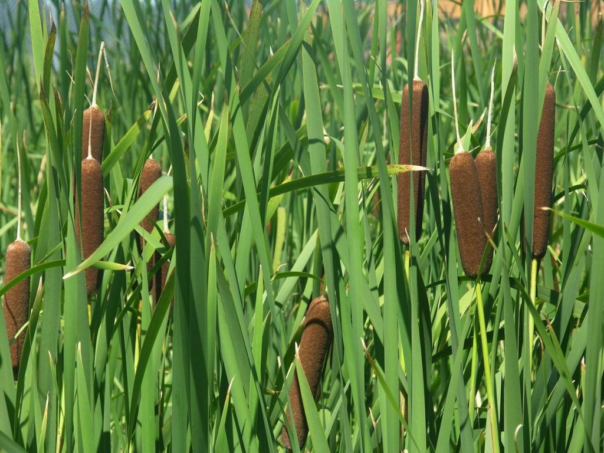
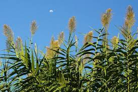
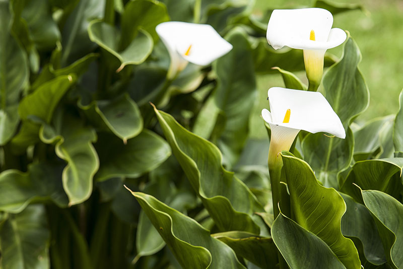

Jonc
The rush is a plant of the reed family, very common in the Mediterranean basin, America and Africa, with more than 225 species.
Canya
Arundo donax, the common cane, Caña de Castilla, reed, chin or cañabrava is a species of herbaceous plant belonging to the Poaceae family.
Cala
Zantedeschia aethiopica, commonly known as gannet, creek, Ethiopian creek, Ethiopian ring, water lily, cartridge, duck flower or jug flower, is a herbaceous perennial of South African origin, of the Araceae family, the most robust and widely naturalized of the genus Zantedeschia.